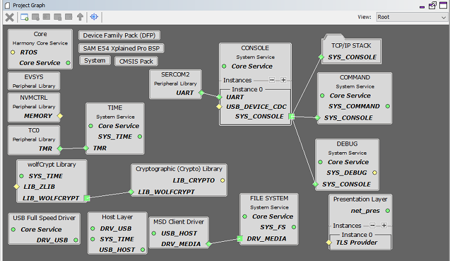
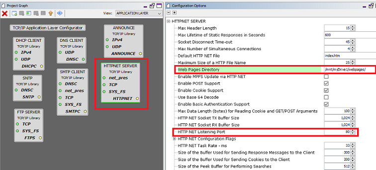
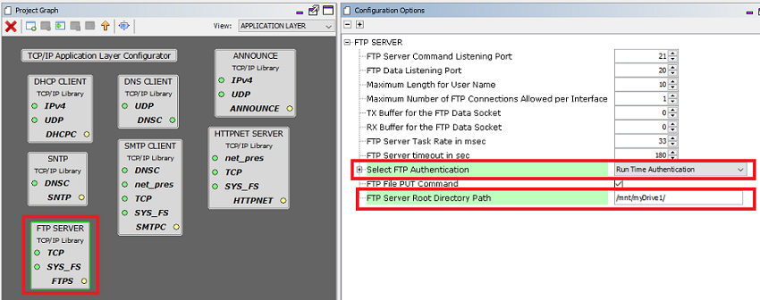
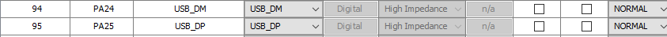
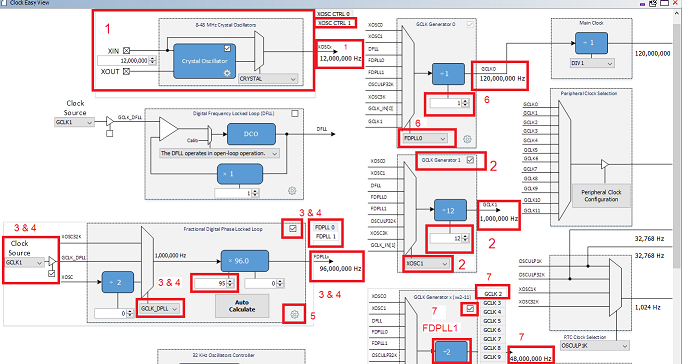
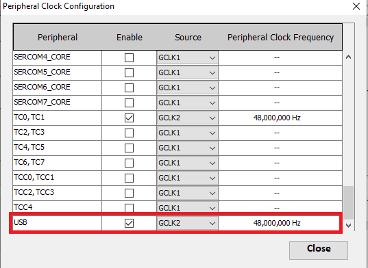

The following table lists the MPLAB X projects available for this demonstration. These projects are available inside <install-dir>/net/apps/web_ftp_server_usb_fatfs/firmware.
To build this project, open the <project name>.X project in MPLAB X IDE.
|
Project Name |
Target Device |
Target Development Board |
Description |
|
sam_e54_xpro.X |
ATSAME54P20A |
SAME54 Xplained Pro |
Demonstrates the TCP/IP Web Server with USB Host_layer , MSD class driver and the MPLAB Harmony File System FS on a development board with ATSAME54P20A device and on-board KSZ8091 PHY. This is a bare-metal (non-RTOS) implementation. |
|
sam_e54_xpro_freertos.X |
ATSAME54P20A |
SAME54 Xplained Pro |
Demonstrates the TCP/IP Web Server with USB Host_layer , MSD class driver and the MPLAB Harmony File System FS on a development board with ATSAME54P20A device and on-board KSZ8091 PHY. This implementation is based on FreeRTOS. |
The following Project Graph diagram shows the Harmony components included in the bare-metal TCP/IP Web Server with USB Host_layer , MSD class driver and the MPLAB Harmony File System demonstration application.
Root project graph with TCPIP stack , USB Host_layer , MSD class driver and the MPLAB Harmony File System –

File system component configuration for this application to use USB HOST media –

NOTE – “USB Full Speed Driver” , “ Host Layer” and “MSD Client Driver” use the default configuration.
HTTP server with Web directory Mount path and Http port number configuration -

FTP server with Root directory Mount Path and Run time authentication –

USB HOST Pin Configurations –

Clock Configuration –
The USB application would need 48MHz clock for functioning. The FDPLL0 will be configured to generate 96MHz for the CPU and divide it using one of the GCLK generators to generate the 48MHz clock needed by the USB Controller. Steps to be followed are as given below:

1. Enable the External Multipurpose Crystal Oscillator1 (XOSC1) needed as reference for FDPLL. Check the boxes and select CRYSTAL from the drop box. The output of XOSC1 shows 12MHz.
2. Select GCLK Generator 1 set to run, select XOSC1 and select the divider 12 to generate GCLK1 output with 1MHz .
3. Enable the FDPLL0 by selecting the check box from the Fractional Digital Phase Lock Loop and select GCLK1 with GCLK_DPLL as the clock source. The output of the FDPLL0 should be 120MHz.
4. Similarly enable the FDPLL1 by selecting the check box from the Fractional Digital Phase Lock Loop and select GCLK1 with GCLK_DPLL as the clock source. The desired FDPLL1 output frequency 96MHz.
5. Click Auto Calculate to show the FDPLL Auto Settings Calculation. Select the desired FDPLL output frequency (96MHz).
6. Select the FDPLL0 as source clock for GCLK0.
7. Select GCLK Generator x only for GCLK2 to run with FDPLL1 as the input source with Clock Divider value to 2. This generated output 48MHz will be used for the USB device.
8. Open Peripheral Clock Configuration and select GCLK2 for USB. Ensure that the peripheral clock frequency should be 48MHz.

Configuration packs for the SAME54 –
SAME54_DFP = v3.3.64
CMSIS = v5.4.0
|
MPLAB Harmony TCP/IP Help
|